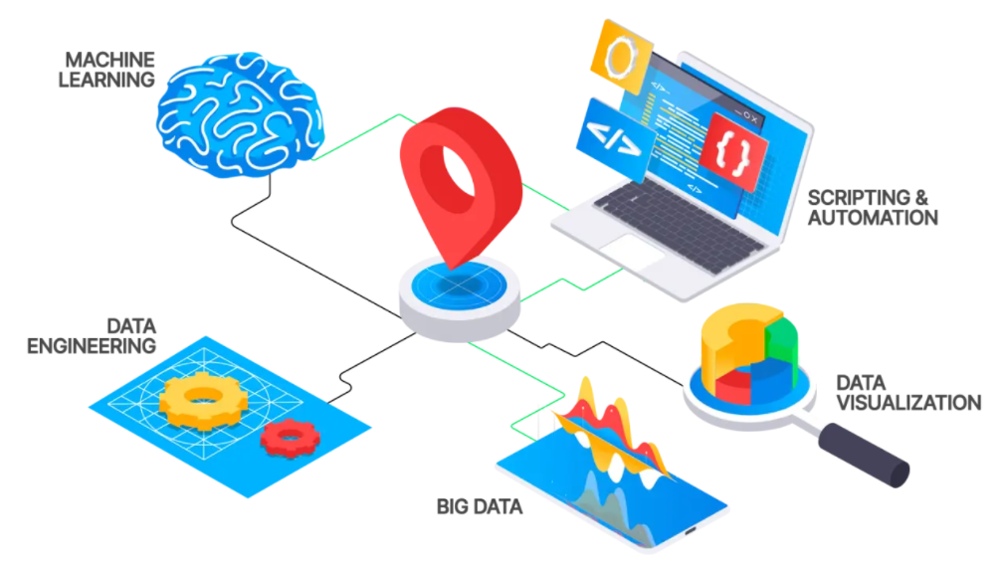

Conociendo a tu Profesor
Ciencia de Datos Espaciales · Recursos Hídricos · Investigación de Impacto
2026-03-01
Bienvenidos
Profesor Asociado · Investigador en Ciencia de Datos Espaciales
Doctor en Ingeniería Agrícola (Recursos Hídricos)
Ingeniero Civil Agrícola
Universidad de Concepción
“Los datos son el lenguaje con el que la Tierra nos habla. Aquí aprenderemos a escucharla.”
Mi Trayectoria Académica
Ingeniería Civil Agrícola Base en recursos hídricos, riego y manejo del territorio. La pregunta central desde el inicio: ¿Cómo gestionar el agua de manera sostenible?
Postgrado · Doctorado en Ingeniería Agrícola Especialización en Recursos Hídricos. Investigación doctoral: análisis de la sequía agrícola en Chile continental.
Profesor Asociado · Investigador Ciencia de Datos Espaciales aplicada al cambio climático y la aridificación. Publicaciones en revistas de alto impacto · Proyectos con financiamiento de la Agencia Nacional de Investigacióin y Desarrollo de Chile (ANID).
El hilo conductor: conectar datos del territorio con decisiones de política pública.
¿Qué es la Ciencia de Datos Espaciales?
La disciplina en una frase:
Extraer conocimiento significativo de datos que tienen una dimensión dónde en el espacio y el tiempo.
Tres pilares:
- Sistemas de Información Geográfica (SIG) Representar el mundo como capas de datos
- Estadística Espacial Los vecinos importan: el espacio tiene autocorrelación
- Ciencia de Datos Modelamiento, aprendizaje automático, visualización

Ejemplo concreto: ¿Dónde en Chile está cambiando la vegetación más rápido y por qué?
Investigación Destacada: Proyecto ODES
ODES — Observatorio de Sequía para la Agricultura y la Biodiversidad de Chile
¿Qué buscamos?
- Monitorear en tiempo real la dinámica de sequías y desertificación en Chile
- Integrar datos satelitales, climáticos e hidrológicos en una plataforma unificada
- Generar indicadores accionables para gestores de recursos hídricos y políticas públicas
¿Por qué es urgente?
Chile es uno de los países con mayor variabilidad climática del mundo. La zona central lleva más de una década en megasequía.
Escala: Nacional · Resolución: Subcuencas hidrográficas · Frecuencia: Mensual
Investigación: Publicaciones Recientes
Línea central de investigación:
“Land-cover fingerprints of a drying Chile”
¿Qué encontramos?
- El cambio en la vegetación de Chile son huellas de la aridificación
- Distintos ecosistemas responden de manera diferente a la falta de agua
- Chile está pasando de una situación de sequía (eventual) a una de aridificación (permanente)
Dato clave: La zona mediterránea de Chile es uno de los 5 hotspots de biodiversidad más amenazados del planeta.
Otras líneas activas:
- Índices de sequía multivariados
- Cambios en la fenología vegetal bajo escenarios de cambio climático
- Integración de machine learning con datos de teledetección
- Estrés hídrico en huertos frutales
Publicaciones en: Remote Sensing of Environment, Earth’s Future, Agricultural Water Management
Las Herramientas del Oficio
R Python Google Earth Engine
R — El lenguaje del análisis riguroso
- Estadística espacial:
sf,terra,stars - Visualización:
ggplot2,tmap - Flujos de análisis reproducibles con
tidyverse
Python — Automatización y Machine Learning
- Modelamiento predictivo:
scikit-learn,xarray - Procesamiento de grandes volúmenes de datos geoespaciales
- Orquestación de pipelines de datos
Google Earth Engine — El telescopio de la Tierra
- Acceso a décadas de imágenes satelitales (Landsat, Sentinel, MODIS)
- Cómputo en la nube a escala planetaria
- Sin necesidad de descargar terabytes de datos
La filosofía: La herramienta sirve a la pregunta, no al revés. Primero define qué necesitas saber, luego elige cómo calcularlo.
Por Qué Importa Este Trabajo
El contexto global:
- El cambio climático ya no es una predicción — es una medición
- Chile experimenta una de las sequías más prolongadas de su historia
- Millones de personas y ecosistemas únicos en riesgo
El impacto directo:
- Decisiones de política hídrica basadas en evidencia
- Alertas tempranas para comunidades agrícolas vulnerables
- Conservación de biodiversidad endémica amenazada
Zona de sacrificio o zona de oportunidad:
La Ciencia de Datos Espaciales puede ser la diferencia entre reaccionar a una crisis y anticiparla.
“No analizamos el territorio por curiosidad académica. Lo hacemos porque hay decisiones reales que dependen de datos reales.”
Más Allá del Laboratorio
El corredor de fondo:
- Aficionado al running
- Primera media maratón (21 km)
- Filosofía del entrenamiento aplicada a la investigación:
El progreso no es lineal. Los mejores resultados vienen de la consistencia, no de los sprints.
Lo que el running me enseñó: Tolerancia al proceso lento · Gestión de la frustración · Celebrar kilómetros, no solo metas
Padre de dos:
- La perspectiva más importante que tengo
- Me recuerda diariamente para qué hacemos ciencia
Otras curiosidades:
- Lector de literatura
- Aficionado del descenso, senderismo y vida en la naturaleza
- Creo firmemente en que la mejor ciencia es la que se puede explicar con claridad
Fuera del aula también soy persona — y eso importa.
Expectativas y Mentoría
Cómo trabajo con estudiantes:
- Puertas abiertas — Las preguntas nunca son malas
- Feedback directo — Prefiero la claridad a la suavidad diplomática
- Proceso sobre resultado — Me interesa cómo piensan, no solo la respuesta final
- Trabajo reproducible — Todo código y análisis debe poder repetirse
Lo que espero de ustedes:
- Curiosidad genuina
- Tolerancia a la ambigüedad (los datos reales son complicados)
- Comunicación proactiva si algo no está claro
Lo que pueden esperar de mí:
- Clases preparadas con contexto real y aplicación práctica
- Retroalimentación oportuna y específica
- Conexión honesta entre teoría y práctica profesional
Oportunidades disponibles:
- Participación en proyectos de investigación activos
- Ayudantías de investigación
- Co-autoría en publicaciones para estudiantes destacados
Preguntas · Conversación · Contacto
¿Tienen preguntas?
Sobre el curso, la investigación, la carrera, el running… cualquier cosa.
Contacto:
- Email institucional:
francisco.zambrano@uss.cl - Oficina:
El Condor 796 / Piso 4 - Horario de atención:
Viernes 8:30 - 16:00
Recursos adicionales:
- GitHub / ResearchGate:
www.github.com/frzambra - Google Scholar:
https://scholar.google.com/citations?user=mKQRdOEAAAAJ&hl=es - Proyecto ODES:
https://odes-chile.org
“Los grandes análisis comienzan con una buena pregunta. Empecemos a hacer preguntas juntos.”

Big Data y Analytics · Universidad San Sebastián · 2026